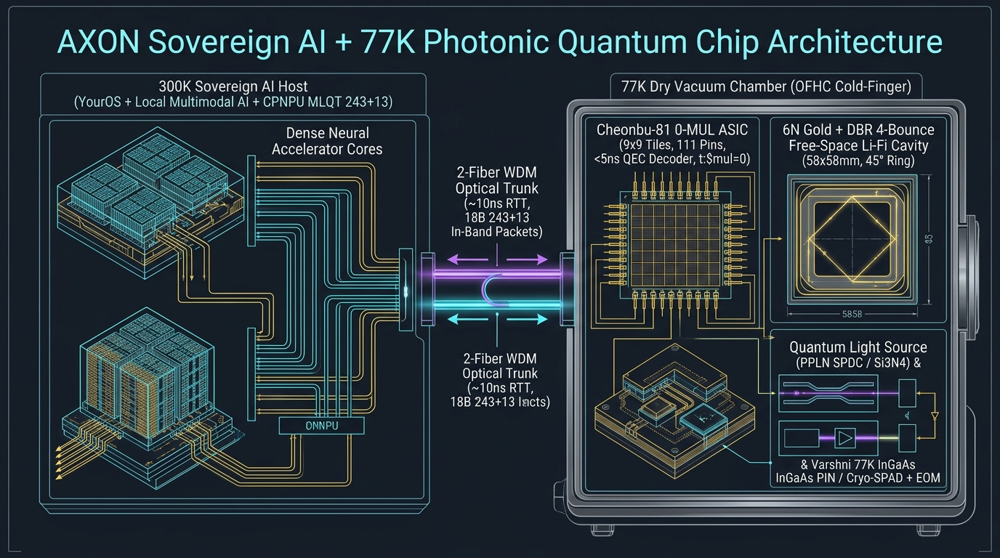
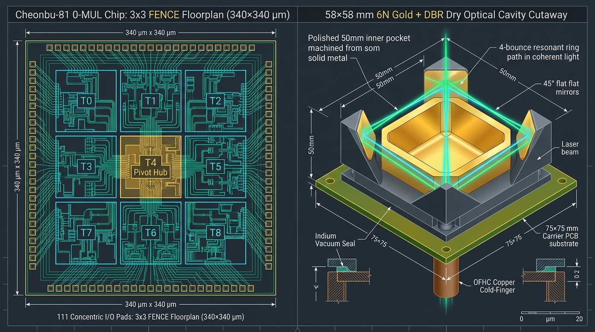
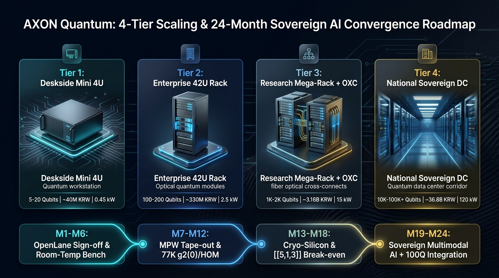

AXON-SSOT-QUANTUM · 24-Month Engineering Roadmap
개발 워크플로우 & 제작승인 체크리스트
RTL·광학 캐비티·77K 극저온·소버린 AI·워크스테이션·법무/특허 6대 도메인의 개발 태스크와 Gate 1~4 제작승인(Fabrication Release) 통과 조건을 실시간으로 추적합니다.
Supabase 클라우드 동기화 설정
schema.sql 다운로드
Supabase 대시보드 SQL Editor에서 supabase_schema.sql을 실행한 뒤, Project URL과 Anon(Publishable) Key를 입력하세요.
관리자 로그인 (RLS 인증 모드 사용 시 선택)
R&D 실험 · 실측 로그 (Cloud Lab Note)
Supabase에 연결하면 클라우드 실험 로그가 표시됩니다.
Gate 1~4 모든 필수 게이트가 완료되면 READY 상태로 전환됩니다.
Gate 1~4 제작승인 게이트
각 게이트에 연결된 태스크가 100% 완료되면 해당 게이트가 PASS 상태로 전환됩니다.
도메인별 실행 태스크 체크리스트
아키텍처 다이어그램 갤러리
카드를 클릭하면 라이트박스 모달에서 고해상도로 확대해 볼 수 있습니다.

0-MUL 코어, 77K 자유공간 광학 캐비티, 243+13 WDM 코덱 통합 계층 구조

Sky130 9타일 QEC 코어(38,957.36 µm²) 및 58×58 mm 6N 골드 4-반사 링 캐비티

Tier 1 데스크톱부터 Tier 4 국가 양자 데이터센터까지의 24개월 스케일업 경로